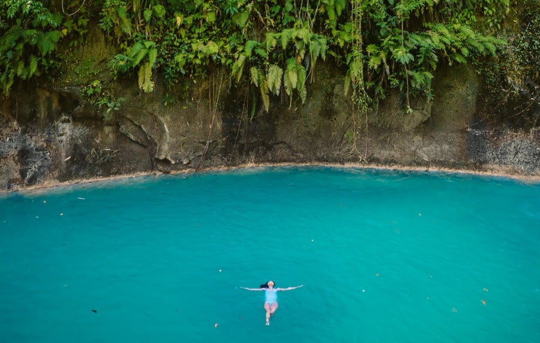
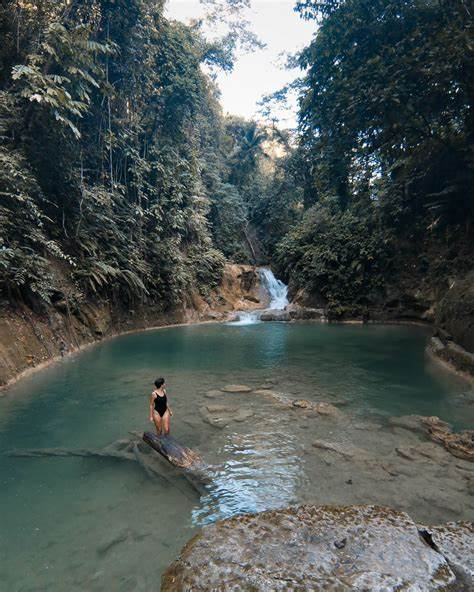
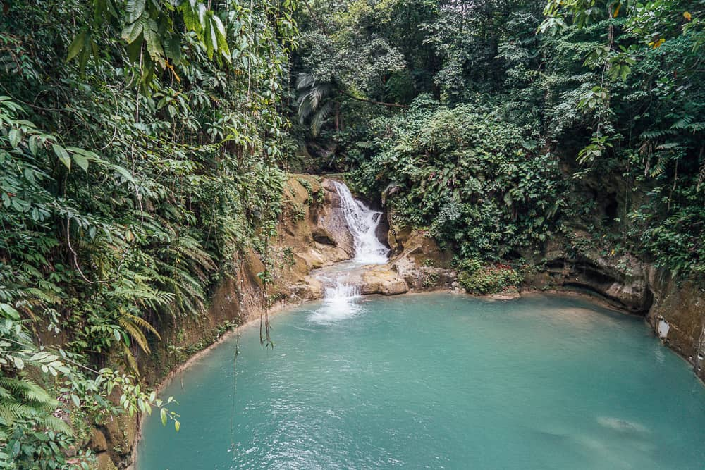
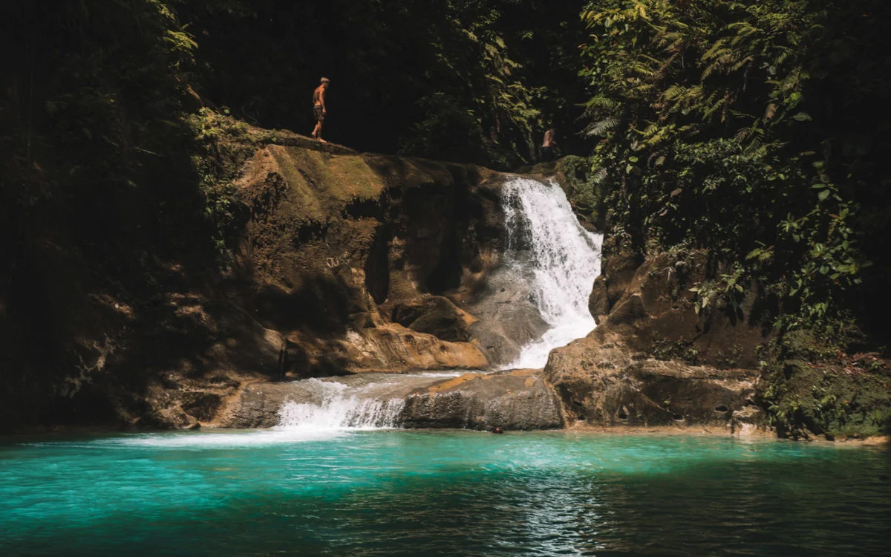

Mag-aso Falls
Mag-Aso Falls is an 8-meter waterfall that is surrounded by a tropical backdrop of tall trees and wild plants.
Carved out under the waterfall is a natural pool that is particularly inviting to go for a swim due to its
milky blue-colored water derived from the limestone rocks in the area.
Things to do in Mag-Aso Falls:
Mag-Aso Falls Bohol is one of the island’s natural treasures and an adventure not to be missed.
Gatorade pools and epic cliff jumps are just some of the reasons why you should visit these awesome
falls in Antequera.




Best time to travel in Mag-aso Falls
Best Time to Visit: The best time to visit Mag-Aso Falls is during the dry season (November to May)
when the water is clear, and the flow is moderate and not too powerful.